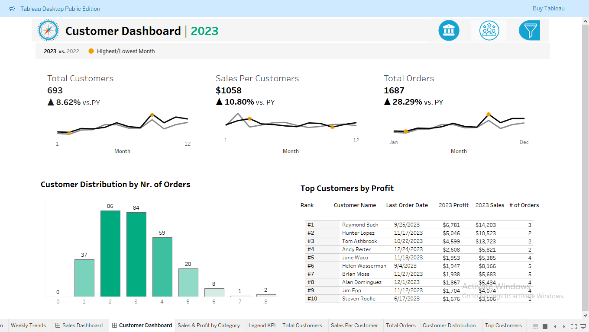
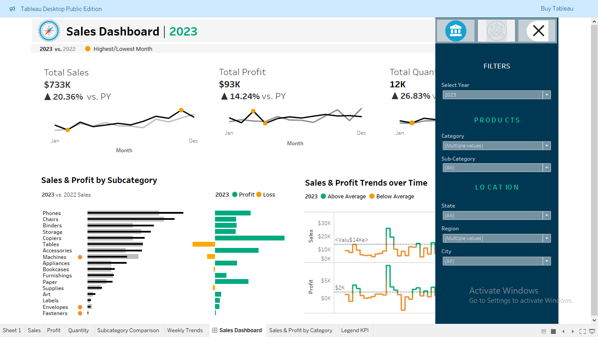

Pakistan Economic Growth Analysis
Time-series analysis of Pakistan's GDP growth patterns from 2000-2022 using Python and Pandas.

Inflation Trends Visualization
Interactive dashboard showing inflation trends across South Asian countries using Tableau.

Economic Indicators Database
SQL database design with queries for key economic metrics (PostgreSQL + Python ETL).

Stock Market Prediction Model
Basic predictive model for KSE-100 index using historical data and simple ML algorithms.

Pakistan Trade Deficit Analysis
Comparative analysis of Pakistan's trade deficit with regional partners using Excel and Power BI.

Youth Unemployment Dashboard
Interactive dashboard visualizing youth unemployment rates across Pakistani provinces.